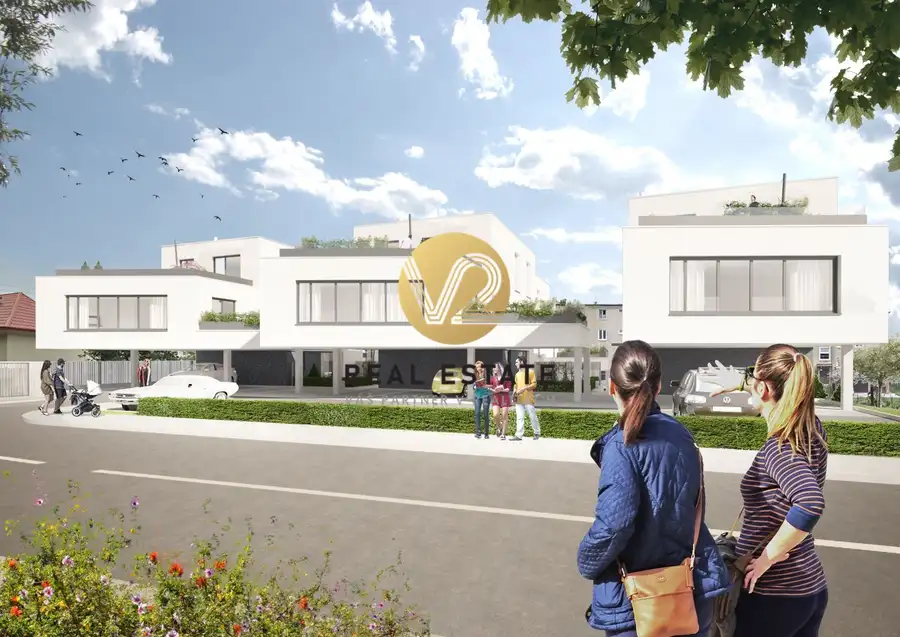
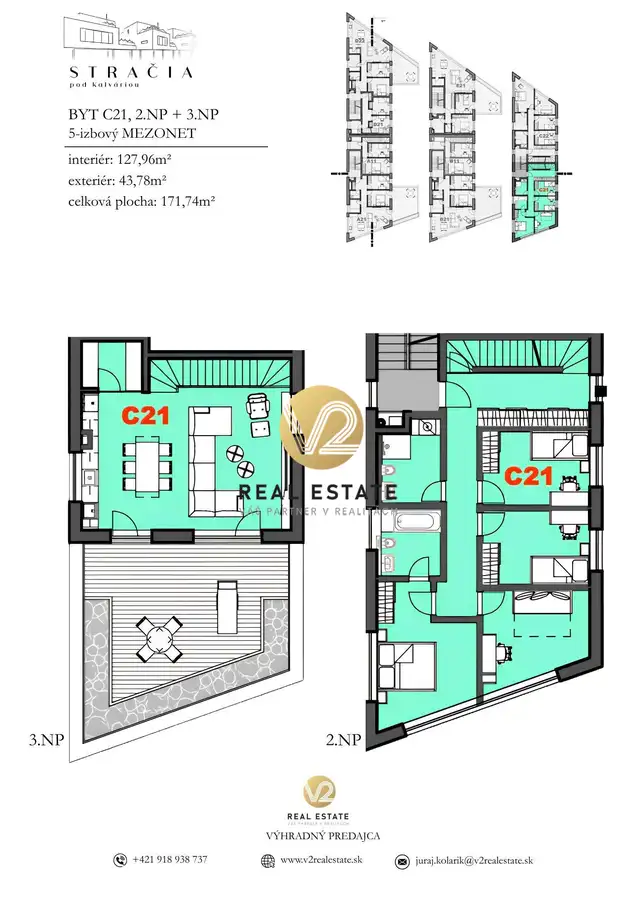

Na PREDAJ – Stračia pod Kalváriou, veľkometrážny 5-izbový exkluzívny mezonet s priestrannou terasou
Nitra



- Plocha127 m²
- Poschodie2. z 3
- StavNovostavba
- Energetická triedaA
O nehnuteľnosti
Juraj Kolárik +421 918 938 737e-mail: juraj.kolarik@v2realestate.skV2 Real Estate ako výhradný predajca ponúka na predaj:5-izbový byt – C21, C22časť: Nitra- Staré mestolokalita: Kalváriaulica: StračiaCelková plocha: 171,74 m2Výmera bytu: 127,96 m2Výmera terasy: 43,78 m2Podlažie: 2,3/3•Nadštandardné bývanie v projekte Stračia pod Kalváriou•Projekt ponúka nadčasovú architektúru, súkromie a butikovú atmosféru bývania s dôrazom na priestrannosť, zeleň a komunitný charakter.•Projekt ponúka na výber zo 14 bytov. Dvoj až päť izbové byty s premyslenými dispozíciami, veľkorysými terasami, dostatkom prirodzeného svetla a dôrazom na moderný mestský život s pokojnou atmosférou pri rieke. Súčasťou projektu sú aj exkluzívne mezonetové byty s priestrannými terasami, pričom vybrané jednotky disponujú aj súkromnými záhradami. Tie vytvárajú jedinečné spojenie komfortu rodinného domu, súkromia a výhod moderného mestského bývania.•Päťizbový mezonet dispozične pozostáva zo štyroch spální, priestrannej obývačky, ktorá je prepojená s kuchyňou a jedálňou. Z obývacej časti je výstup na priestrannú terasu. V byte sa nachádzajú dve kúpeľne s toaletou. •Moderná architektúra novostavby pracuje s čistými líniami a množstvom prirodzeného svetla.•Byt sa predáva v prevedení „Štandard s možnosťou výberu farebného dekoru.•Vyšší komfort poskytne podlahové vykurovanie, predpríprava na klimatizáciu, lokálna rekuperácia, okná s izolačným trojsklom, predpríprava na exteriérové žalúzie, bezpečnostné dvere.•Ku každému bytu možnosť dokúpenia parkovacích miest.•Výborná lokalita v prestížnej časti Nitry- Kalvária. Výnimočnosť tejto lokality tvorí kombinácia pokojného rezidenčného bývania, bezprostrednej blízkosti rieky a pešej dostupnosti historického centra mesta s kompletnou mestskou infraštruktúrou•viac informácií sa dozviete na:•t.č. +421 918 938 737•e-mail: juraj.kolarik@v2realestate.sk
Parametre
- Cena vrátane energií
- Nie
- Druh
- 5 a viac izbový byt
- Dátum zverejnenia
- 22. 05. 2026
- Energetický certifikát budovy
- A
- Podlažie
- 2
- Počet nadzemných podlaží
- 3
- Počet vonkajších parkovacích miest
- 2
- Rok výstavby
- 2026
- Stav nehnuteľnosti
- Novostavba
- Terás
- 1
- Typ
- Predaj
- Typ konštrukcie
- Tehlová
- Vybavenie
- Terasa, Vonkajšie parkovacie miesto
- Úžitková plocha
- 127 m²
Kde to je


Mohlo by Vás zaujímať
 PozemokNové
135 000 €Na PREDAJ pozemok 969m2, stavebné povolenie a IS, Nitra – Malý Lapáš
Malý Lapáš
969 m²
PozemokNové
135 000 €Na PREDAJ pozemok 969m2, stavebné povolenie a IS, Nitra – Malý Lapáš
Malý Lapáš
969 m²
 Komerčné priestoryNové
299 000 €Na PREDAJ komerčný objekt s možnosťou dostavby, Nitra - Krškany
Nitra
298 m²
Komerčné priestoryNové
299 000 €Na PREDAJ komerčný objekt s možnosťou dostavby, Nitra - Krškany
Nitra
298 m²
 Komerčné priestoryNové
2 000 €NA PRENÁJOM – Reprezentatívne priestory s parkovaním o výmere 300m2
Nitra
300 m²
Komerčné priestoryNové
2 000 €NA PRENÁJOM – Reprezentatívne priestory s parkovaním o výmere 300m2
Nitra
300 m²